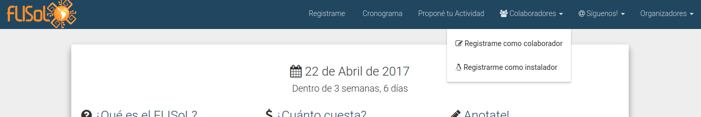

Registro de instaladores
Un instalador es aquella persona que va a ir a realizar instalaciones a los asistentes. Para cuestiones organizativas, pueden registrarse en la plataforma. Así mismo, son quienes podrán cargar instalaciones realizadas.
Registrarse como Instalador
-
Seguir los pasos para registrarse e iniciar sesión.
-
Ingresar a la página específica de la sede (por ejemplo, https://eventol.flisol.org.ar/event/caba/)
- Desplegar el menú "Colaboradores" y seleccionar la opción "Regsitrarme como instalador".

-
En el paso siguiente le pedirá algunos datos obligatorios:
-
Nivel: Nivel que la persona considera que tiene para realizar una instalación. Leí la guía: Afirma mediante declaración jurada que leyó la guía del buen instalador antes de registrarse.